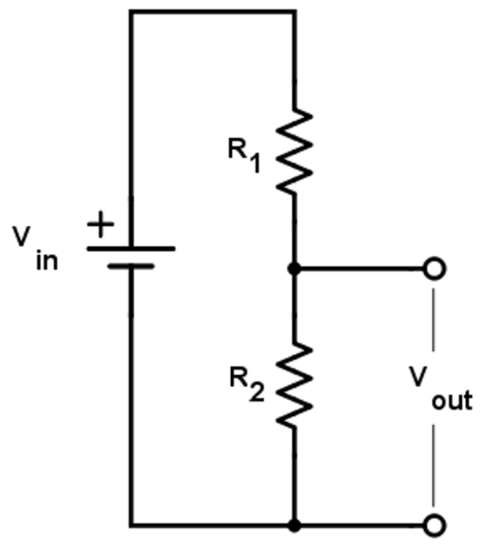
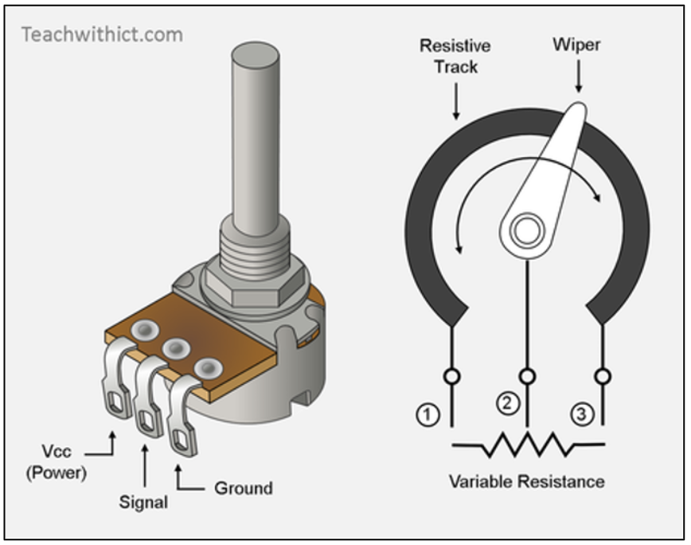
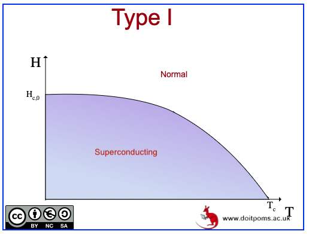
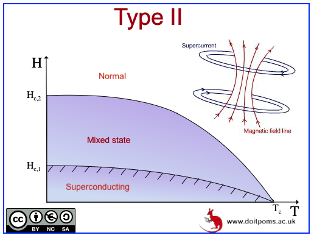
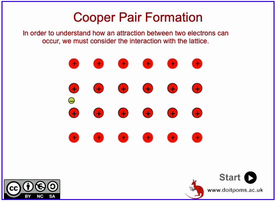
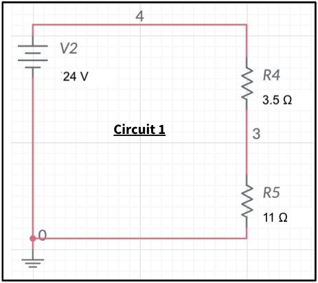
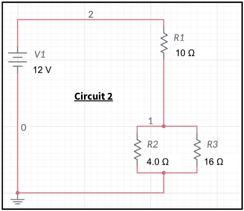

Lecture 3: Resistivity, Conductivity and Superconductivity#
Learning Objectives#
By the end of this lecture you should:
Be able to describe what a potential divider is.
Be able to solve circuit problems involving potential diviers.
Be able to derive the equation for resistivity and solve problems using it.
Be able to define conductivity and superconductivity.
Potential Dividers#
The role of a potential divider is to divide voltage. A potential divider can be made as a simple circuit containing a source of EMF and two (or more) resistors. An example is shown in the figure below:

We know that the voltage drop across all components in a circuit must equal the EMF of the supply, $V_{in}:
therefore by changing the values of resistance of the resistors, we can change the voltage across them. Let’s show this using Ohm’s law to find the current flowing through the resistors:
Now to determine the voltage across one of the resistors, say \(R_2\), we simply use Ohm’s law again and multiply both sides of the equation above by the resistance of \(R_2\):
This works for any arrangement of resistors, if we wanted to determine the voltage drop across \(R_1\) we would simply replace the \(R_2\) value in the numerator with \(R_1\). Similarly, if we had more than two resistors, we could calculate the voltage drop across any of them (or combination thereof). For example, let us imagine we had three resistors instead of two, to determine the voltage drop across \(R_2\), the equation above would simply be:
If in this three resistor setup we wanted to measure the total voltage drop across two resistors, say \(R_1\) and \(R_2\), the above equation would be modified to:
Important
The general expression for determining the voltage measured across a given resistor, \(R_x\), in a potential divider containing \(n\) resistors is given as:
You may be required to calculate equivalent resistances of resistor combinations when performing these calculations. i.e. What if \(R_x\) is actually three resistors arranged in parallel?
Potential Divider Applications#
Potential dividers are very useful owing to their simplicity. It may be the case that a fixed input voltage needs to be transformed into a different output voltage for optimisation purposes. For example, one such potentiometers (a variable potential divider - imaged below) were historically used to manually adjust picture settings of analogue televisions or control the volume of audio equipment.

Potential dividers can also be used as sensors. For example, should resistor 2 in the in the potential divider be replaced with a light or temperature dependent resistor, \(V_{out}\) would vary as a function of either of these conditions. A circuit could then be made where if \(V_out\) falls below a certain threshold, a signal is sent to your boiler to command it to turn on the heating.
Resistivity and Conductivity#
Throught this course so far we have discussed resistors without really stating what they are. Essentially a resistor is any component in a circuit that has resistance, however we would usually be referring to an actual “resistor” with a set resistance.
In reality wires connecting circuit components also have a resistance, however we usually neglect their contribution to the total circuit resistance as wires are made of materials chosen due to their high conductivity. From the last sentance it is clear that resistance and conductivity are related to one another, but it is first worth considering how we quantify how much resistance a circuit component provides.
Let’s consider a metal wire. Intuatively, we can make some reasonable assumptions as to what factors would influence its overall resistance:
If we increase the length of the wire, the resistance will increase. This make sense, if 1m of wire has a resistance of \(1\,\Omega\), if we added a second identical wire to the end of it in series, the total resistance would be \(2\,\Omega\).
If we increase the cross sectional area of the wire, the resistance will decrease. Essentially, having less area for charge carries to flow through will reduce the overall current for a given voltage - the resistance is larger. Increasing the cross-sectional area is akin to adding a second resistor in parallel.
Resistance is proportional to length and inversely proportional to the cross-sectional area, which can be expressed mathematically as:
where \(R\) is the resistance, \(L\) is the length of the wire and \(A\) is the cross sectional area. When we see a linearly proportional relationship we can add a constant of proportionality, in this case this is equal to the resistivity, \(\rho\), of the material the wire is made from.
The conductivity, \(\sigma\), of a material is simply the reciprocal of the resistivity i.e. if a material has a low resistivity it has a high conductivity and vice vera.
Important
Resistivity, \(\rho\) is a characteristic property of materials, has units of \(\Omega\, m\), and can be determined using the equation:
Conductivity, \(\sigma\) is simply the reciprocal of the resistivity, has units of \(\Omega^{-1}\, m^{-1}\) or \(S\, m^-{1}\) (Siemens is simply inverse Ohm):
Superconductivity#
Whilst most materials are electrically resistive, in certain conditions some metals or alloys become superconductive, which is to say that they exhibit zero resistance. This means that when a current has been established in the superconductor, it will exist indefinetly without losing energy. A second key property of superconductors is that a magnetic field is unable to penetrate to bulk of the material (provided that they are sufficiently weak). This is known as the Meissner effect and is what allows superconducting materials to levitate!

In order to achieve superconductivity, these materials must be cooled to an incredibly low critical temperature \(T_C\) using a cryogenic like liquid nitrogen or liquid helium (temperatures of -\(196\,°C\) and \(-269\,°C\) respectively). At these temperatures the materials undergo a phase change to become super conductive.
These materials are very important as they can be used to generate very strong magnetic fields, such as those required for MRI scans, particle accelerators, maglev trains or those that will be used in future fusion power plants to contain highly energetic charged particles.
Type-I and Type-II Superconductivity#
Superconductive materials can be categorised into two types:
Type-I: When cooled below the ciritical temperature, these materials exhibit superconductivity provided that the external magnetic field is not above a critical value or the current density of charges within the material does not exceed a particular limit. If either of these conditions are true, the material becomes non-superconductive. The value of external magnetic field required to destroy the super conducting state is critical temperature dependant as shown in the figure below:

Type-II: This type of superconductor behaves the same as a type-I below a critical threshold of the external magnetic field and is in the normal state above a second critical threshold of magnetic field, however, between these two critical thresholds the material exits in a “mixed state”. In this state, when the material is penetrated by an external magnetic field (magnetic-flux), it still contains regions of superconductivity. The mechamnism for this is as follows:
the magnetic field lines penetrate the bulk of the material,
current vortexes occur around the field lines,
these flux-vortexes screen the rest of the material from the external magnetic field allowing it to remain in the superconducting state,
these flux-vortexes occur in a regular arrangement within the material.
The figure below showa how the normal, mixed and superconducting states vary as a function of critical temperature in a type-II superconducting material:

The gif below shows how the flux-vortexes exist with the mixed state:

Cooper Pairs and BCS Theory#
Warning
This section is included for completeness and provides some additional information required to understand how superconductivity works. This is a high-level topic that you may encounter during your Physics degree, but is non-examinable in the foundation year.
Very briefly, to understand BCS theory we first must be aware about some of a few facts about fundamental particles and quantum physics:
Fermions are a type of particle that have odd half-integer spin quantum number, which is one of many quantum numbers used to describe particle states. An example of a fermion is the electron.
Bosons have integer spin quantum numbers. An example of a boson is a photon (particle of light).
The Pauli-Exclusion Principle states that two identical fermions cannot occupy the same quantum state (e.g. two electrons with the same spin cannot occupy the same atomic orbital). The Pauli-Exclusion principle does not apply to Bosons.
Using this information, we are able to provide a basic overview of the mechanism that drives superconductivity:
In a superconducting material, individual electrons are able to pair up with other electrons. This is known as a Cooper pair.
This only occurs as at very low temperatures where the amplitude of atomic osciallaitons around their lattice points becomes negligiable, meaning when an electron approaches, the positively charged ion cores of the atoms are attracted to the negatively charged electron.
This distorts the lattice and creates a region of increased positive charge density. This positive region then attracts a second electrons by overcoming the repulsion between the two electrons. This mechanism is illustrated in the following gif:

These electrons are now bound together as a Cooper pair. These Cooper pair no longer behaves like bosons rather than a fermions, meaning they no longer obey the exclusion principle and can instead “condense” into a single quantum state.
When accelerated by an electric field, individual electrons will gain momentum in their own way and are able to interact with the atomic lattice which manifests as electric resistance.
As Cooper pairs are all in the same quantum state, they must all gain the same amount of momentum when accelerated by an electric field, this means that individual electrons are unable to interact with the atomic lattice and there is no electrical resistance!
Electrons in Cooper pairs are only very weakly bound and a small increase in temperature can provide sufficent energy to split break them apart. This is why superconductivity occurs at very low temperatures.
The mechanism above is known as BSC theory (Bardeen–Cooper–Schrieffer theory - named after John Bardeen, Leon Cooper, and John Robert Schrieffer who came up with it). Superconductivity is a very complex topic and one that is still not completely understood. For example, the BCS theory is unable to explain Type-II superconductivity nor explain how higher temperature superconductors may work.
Resource
The figures above were taken from Dissemination of IT for the Promotion of Materials Science by the Univertsity of Cambridge, which is a fantastic resources to look at if you would like to learn more about superconductivity. These resources can be found at https://www.doitpoms.ac.uk/tlplib/superconductivity/index.php .
Questions#
Warning
Atempt the questions before looking at the solutions otherwise you will not learn!
Students who look at mark schemes without going through the motions of a question often think “yes, that’s what I would have done”, but are then unable to perfom on exams as the knowledge was never consolidated through practise.
Question 1#
Determine the voltage measured across resistors R4 and R5 in the following circuit:

Q1 Solution
To solve this problem we simply use the potential divider formula:
\( V_{out} = V_{in}\frac{R_x}{R_4 + R_5}. \)
Therefore the voltage measured across resistor R1 is:
\( V_{out} = 24\, V\frac{3.5 \, \Omega}{3.5 \, \Omega + 11 \, \Omega}, \)
\( V_{out} = 5.8 \, V, \)
and the voltage measured across resistor R2 is:
\( V_{out} = 24\, V\frac{11 \, \Omega}{3.5 \, \Omega + 11 \, \Omega}, \)
\( V_{out} = 18.2 \, V = 18 \, V. \)
We can check that this is correct by adding the total voltage drops across both resistors - this should be the same as the supply voltage:
\( \Sigma V_{out} = 5.8 \, V + 18.2 \, V = 24 = V_{in}. \)
The values in the question are reported to two significant figures, which is how the final answers should also be reported. \(18.2 \, V\) was used above to prove the point that the voltage drops across the resistors add to the supply voltage.
Question 2#
Determine the voltage drop across resistor R1, the resistors R2 and R3 in parallel in the following circuit:

Q2 Hint
First determine what the equivalent resistance of the resistors arranged in parallel is.
Q2 Solution
The voltage drop across the resistors arranged in parallel is going to be the same. We first must determine their equivalent total resistance using the resistors in parallel equation:
\( \frac{1}{R_p} = \frac{1}{R_2} + \frac{1}{R_3},\)
\( \frac{1}{R_p} = \frac{1}{4.0\, \Omega} + \frac{1}{16 \, \Omega} = \frac{5}{16}\, \Omega^{-1}, \)
\( R_p = \frac{16}{5}\, \Omega. \)
Now to solve this problem we simply use the potential divider formula again. Let’s start with resistor R1:
\( V_{out} = V_{in}\frac{R_x}{R_1 + R_p}. \)
Therefore the voltage measured across resistor R1 is:
\( V_{out} = 12\, V\frac{10 \, \Omega}{10 \, \Omega + \frac{16}{5} \, \Omega}, \)
\( V_{out} = 9.1 \, V, \)
and the voltage measured across resistors R3 and R4 is:
\( V_{out} = 12\, V\frac{10 \, \Omega}{\frac{16}{5} \, \Omega + \frac{16}{5} \, \Omega}, \)
\( V_{out} = 2.9 \, V \)
We can check that this is correct by adding the total voltage drops across both resistors - this should be the same as the supply voltage:
\( \Sigma V_{out} = 9.1 \, V + 2.9 \, V = 12 = V_{in}. \)
Question 3#
A cylindrical wire of length \(0.200 \, m\) has a radius of \(0.500 \, mm\). The wire is measured to have a resistance of \(4.07 \, m \Omega\).
a) What material is the wire made from: Silver (\(\rho = 1.60 \times 10^{-8}\, \Omega\,m\)), Copper (\(\rho = 1.70 \times 10^{-8}\, \Omega\,m\)) or Aluminium (\(\rho = 2.70 \times 10^{-8}\, \Omega\,m\))?
b) What is the conductivity of the material?
Q3a Solution
To determine the resistance we simply use the appropriate equation:
\( R = \rho \frac{L}{A} .\)
The area of wire has a circular cross section so the resistance is given by:
\( R = \rho \frac{L}{\pi r^2}, \)
\( R = \rho \frac{L}{\pi r^2}. \)
This equation can be rearranged to give the resistivity:
\( \rho = R \frac{\pi r^2}{L}, \)
\( \rho = 4.07\times 10^{-3}\,\Omega \, m \frac{\pi \cdot (0.500\times 10^{-3})^2 \, m^2}{0.200\, m}, \)
\( \rho = 1.60 \times 10^{-8} \, \Omega \, m. \)
Therefore the wire is made from silver.
Q3b Solution
The conductivity is just the reciprocal of the resistivity:
The area of wire has a circular cross section so the resistance is given by:
\( \sigma = \frac{1}{\rho}, \)
\( \sigma = \frac{1}{1.60 \times 10^{-8} \, \Omega \, m}, \)
\( \sigma = 6.25 \times 10^7 \, S \, m^{-1}. \)
Question 4#
A square wire made from copper has a resistance of \(40.0 \, \Omega\) and is measured to have a length of \(1.40\, m\). What is the width of the wire? (Copper, \(\rho = 1.70 \times 10^{-8}\, \Omega\,m\).)
Q4 Solution
For this question we again just use the appropriate equation, but now the cross-sectional area of the wire is given as the area of a square rather than a circle:
\( R = \rho \frac{L}{A}, \)
\( R = \rho \frac{L}{x^2}, \)
\( x^2 = \frac{\rho L}{R}, \)
\( x = \sqrt{\frac{\rho L}{R}} \)
\( x = \sqrt{\frac{1.70 \times 10^{-8}\, \Omega\,m \times 1.40\, m}{40.0 \, \Omega}}, \)
\( x = 2.44 \times 10^{-5} \, m = 24.4 \, \mu m.\)